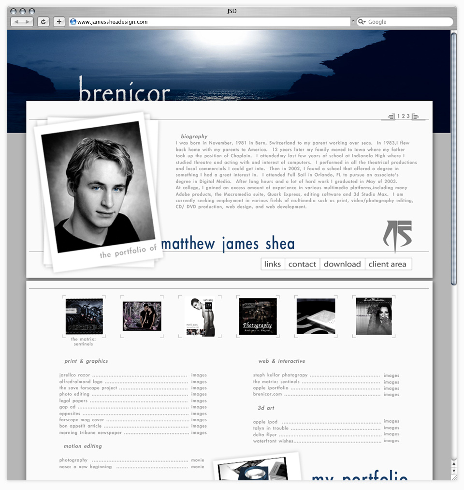
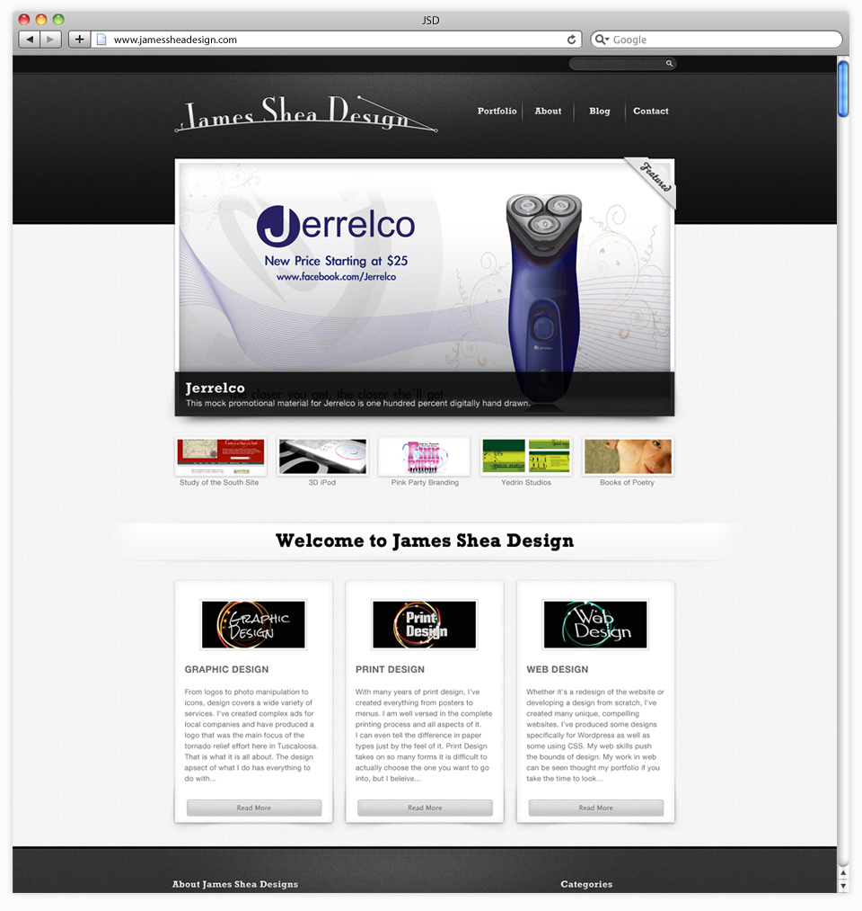
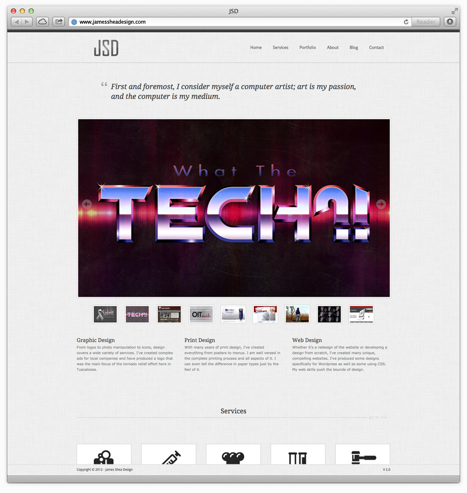
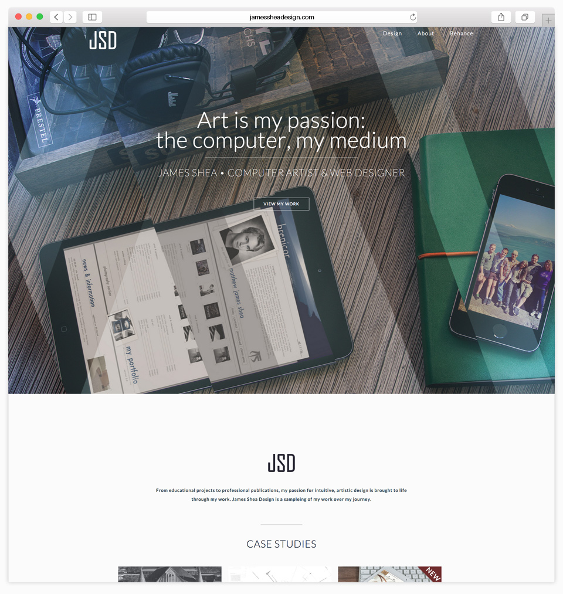

I built James Shea Design from the ground up over the course of many months. The style is a minimal, modern flat design that is fully responsive. Each page has a different parallax-scrolling header giving it a fluid quality. On the main page I use the jQuery plugin MixItUp, and a cool direction-aware hover effect from Codrops. I'm using the Lato font from the great people at Google, and the site is hosted by Media Temple. Thanks so much for viewing my portfolio website.
JSD V.1 - flash - Circa 2004
My first online portfolio went live in 2004. This was around the time when Macromedia Flash was very big and popular and everyone was building a complicated intro with motion and music. I built my whole site in Flash with pop up windows for the portfolio pieces. The site even featured three songs created by my friend, DJ Eric Ryan that would play on a loop.
JSD V.2 - WordPress - Circa 2009
My second portfolio site was created in WordPress. Content management systems were, and still are, a great way to build a website. I used an image slider on the main page to rotate featured pieces, and attempted to incorporate a blog and download section. I selected a WordPress template that would focus on my creative work and not detract from it.
JSD V.3 - HTML Template - Circa 2012
My main inspiration for this iteration of my portfolio was the one page website design movement. I stumbled upon One Page Love that features many great websites all on one single page. I purchased a minimal website template that utilized one page design and modified it greatly so that it assembled all of my information on the main page. The site also featured a filtering and sorting plugin and an animated scrolling effect.
JSD V.4 - Responsive Design - Circa 2014
As people are now accessing the web more and more with smart phones and tablets, I knew I needed a site that could accommodate these devices. One of my biggest goals with this redesign was to make it responsive. Also, due to the growing popularity of flat and content-first design, decided a refresh was in order. Therefore, with my quick and constantly expanding knowledge of web programming, I created this site from scratch.
